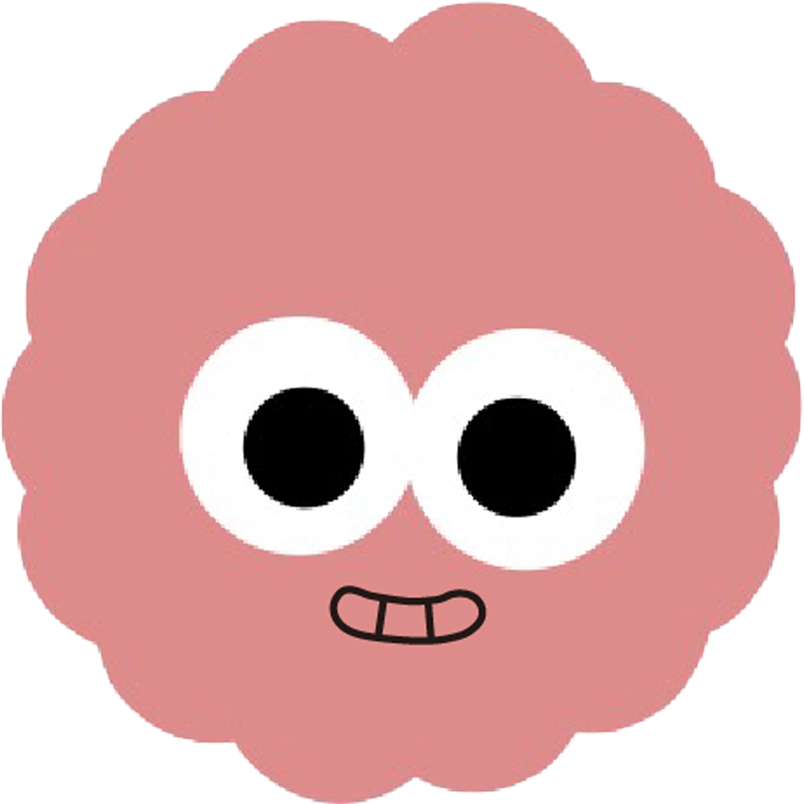

<ion-content>
  <div class="container" [style.height.px]="windowHeight">
    <div class="todo__title-wrap">
        <div class="todo__title-info">
          <div class="year-month" (click)="openCalendar()"> {{ selectYear }}.{{ selectMonth }}</div>
          <div class="btn-wrap">
            <button class="btn-shortcut-setting">
              
            </button>
          </div>
        </div>
      <ion-grid>
        <ion-row class="todo__content__week">
          <ion-col *ngFor="let day of weekday" [ngStyle]="{'text-align': 'center'}"> {{day}} </ion-col>
        </ion-row>
        <ion-row class="todo__content__week-date">
            <ion-slides [options]="weekSlideOption" (ionSlideReachEnd)="endSlide()" (ionSlideReachStart)="firstSlide()">
              <ion-slide *ngFor="let aWeek of slideWeek">
                <ion-col *ngFor="let date of aWeek" [ngStyle]="{'text-align': 'center'}"> 
                  <div class="select" *ngIf="date == selectDay"> {{date.getDate()}}  </div>
                  <div *ngIf="date !== selectDay" (click)="changeDay(date)"> {{date.getDate()}}  </div>
                </ion-col>
              </ion-slide>
            </ion-slides>
        </ion-row>
      </ion-grid>
    </div>
    <div class="todo__content-wrap">
      <div class="menu-name">
        todolist
      </div>
      <div class="todo-wrap" *ngFor="let todo of selectDayTodoList">
        <div class="todo-icon">
          
          
          
        </div>
        <div class="todo-content" *ngIf="todo.isDone == 0">{{ todo.title }}</div>
        <div class="todo-content-done" *ngIf="todo.isDone == 1">{{ todo.title }}</div>
      </div>
    </div>
  </div>
</ion-content>
